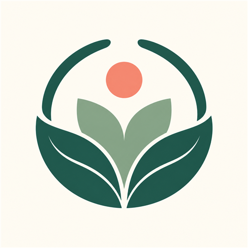

CEWIA Tech
CEWIA Tech
Um Minuto para Si
Uma pausa. Uma respiração. Um encontro com você.
Privado · Sem anúncios · Sem cadastroUm momento para voltar a si
Respire por um minuto, escolha uma intenção e receba uma entre 365 mensagens em português, inglês e espanhol.
Seu espaço permanece seu
Registre reflexões, guarde mensagens e acompanhe seu caminho em períodos de 7, 15 ou 30 dias. Seus registros ficam somente no aparelho.
Leve consigo o que fizer sentido
Crie cards, gere um relatório pessoal em PDF e programe lembretes locais. Nada é compartilhado automaticamente.
Idealização e curadoria: Cristiane Tavares · @cristianetavares.psi · Psicóloga e terapeuta integrativa. Desenvolvido por CEWIA Tech. O app é uma ferramenta de bem-estar e não substitui orientação profissional.
Política de privacidadeA Minute for Yourself
A pause. A breath. A moment with yourself.
Private · No ads · No accountA moment to return to yourself
Breathe for one minute, choose an intention, and receive one of 365 messages in Portuguese, English, and Spanish.
Your space remains yours
Record reflections, save messages, and revisit your path over 7, 15, or 30 days. Your records stay only on the device.
Take with you what feels meaningful
Create cards, generate a personal PDF report, and schedule local reminders. Nothing is shared automatically.
Created and curated by Cristiane Tavares · @cristianetavares.psi · Psychologist and integrative therapist. Developed by CEWIA Tech. The app is a wellness tool and does not replace professional guidance.
Privacy policyUn Minuto para Ti
Una pausa. Una respiración. Un encuentro contigo.
Privado · Sin anuncios · Sin registroUn momento para volver a ti
Respira durante un minuto, elige una intención y recibe uno de 365 mensajes en portugués, inglés y español.
Tu espacio sigue siendo tuyo
Registra reflexiones, guarda mensajes y revisa tu camino en períodos de 7, 15 o 30 días. Tus registros permanecen solamente en el dispositivo.
Lleva contigo lo que tenga sentido
Crea tarjetas, genera un informe personal en PDF y programa recordatorios locales. Nada se comparte automáticamente.
Idea y curaduría: Cristiane Tavares · @cristianetavares.psi · Psicóloga y terapeuta integrativa. Desarrollado por CEWIA Tech. La aplicación es una herramienta de bienestar y no sustituye la orientación profesional.
Política de privacidad